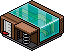
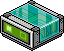
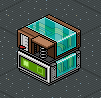

Wired Handbuch für Anfänger
Nr. 1: Erste Schritte
Inhalt:
1. Was sind Wireds?
2. Wiredtypen: Effekt und Auslöser
3. Wired verwenden
4. Beispiel
5. Zusatzinfo
1. Was sind Wireds?
Wireds sind konfigurierbare Möbel mit denen man Einfluss auf andere Möbel und Wanddekorationen/Bots/Habbos/Haustiere ausüben kann. Sie funktionieren nur in Kombination als Stapel (Ausnahmen sind hier unberücksichtigt). Die Kombinationen sind so vielfältig, dass man fast alles mit ihnen machen und nie alles lernen kann, weil immer etwas komplexeres kombiniert werden kann.
Um einen kleinen Einblick in die Gesamtübersicht der Wireds zu erhalten lohnt es sich auch bei “Sternis Wired Labor” vorbeizuschauen. Der Raumbesitzer heißt sternthomas2. Dort findest du auch einige gute Übungen und Beschreibungen. Raumlink: https://www.habbo.de/hotel?room=26220998
Zu diesem Raum gibt es ein passendes Youtube-Video, dass alle Wiredtypen im Überblick zeigt:
Inhalt:
1. Was sind Wireds?
2. Wiredtypen: Effekt und Auslöser
3. Wired verwenden
4. Beispiel
5. Zusatzinfo
1. Was sind Wireds?
Wireds sind konfigurierbare Möbel mit denen man Einfluss auf andere Möbel und Wanddekorationen/Bots/Habbos/Haustiere ausüben kann. Sie funktionieren nur in Kombination als Stapel (Ausnahmen sind hier unberücksichtigt). Die Kombinationen sind so vielfältig, dass man fast alles mit ihnen machen und nie alles lernen kann, weil immer etwas komplexeres kombiniert werden kann.
Um einen kleinen Einblick in die Gesamtübersicht der Wireds zu erhalten lohnt es sich auch bei “Sternis Wired Labor” vorbeizuschauen. Der Raumbesitzer heißt sternthomas2. Dort findest du auch einige gute Übungen und Beschreibungen. Raumlink: https://www.habbo.de/hotel?room=26220998
Zu diesem Raum gibt es ein passendes Youtube-Video, dass alle Wiredtypen im Überblick zeigt:
2. Wiredtypen: Auslöser + Effekt
Damit Wireds genutzt werden können müssen Mindestens 1x Auslöser + 1x Effekt Wired in einem Stapel zusammengefügt werden! Nur in einem Stapel kombiniert erkennen die Wireds, dass sie voneinander abhängig sind.
Auslöser: Diese Wireds werden gebraucht, um einzustellen wann oder wie ein Effekt aktiviert werden soll, also was passieren muss damit ein Effekt „ausgelöst“ wird. Beispielwired:

WIRED Auslöser: Habbo tritt auf Gegenstand
Effekt: Diese Wireds lassen verschiedene Phänomene geschehen. Z. B. Teleportation, Möbel bewegen, drehen, positionieren..
Beispielwired:
Beispielwired:

WIRED Effekt: Zu Möbelstück teleportieren
3. Wired verwenden
Mit Doppelklick auf das Wired oder auf Verwenden öffnet sich das Wired-Einstellungsfenster.
Habbo tritt auf Gegenstand „Möbel wählen“: Bis zu 20 Möbel können ausgewählt werden, indem man auf ein Möbelstück bei geöffnetem Wired-Einstellungsfenster klickt. Möchte man mehr als 20 Möbel auswählen, braucht man mehrere Tritt-auf Wireds im selben (!) Stapel. Ausgewählte Möbel werden ausgegraut, sodass sie sichtbar markiert sind. Wenn man sie nicht mehr auswählen möchte, klickt man ein weiteres Mal darauf und das Möbelstück erhält seine ursprüngliche Farbe zurück.
Auf „Bereit“ wird die Einstellung gespeichert.
Zu Möbelstück teleportieren „Effekt erst nach x Sekunden“: Darin stellt man ein, wie viel Zeit vergehen soll (0 bis 10 s) bis der Effekt nach dem Auslösen aktiviert werden soll. Die Skala geht in 0,5 s Schritte.
Mit Doppelklick auf das Wired oder auf Verwenden öffnet sich das Wired-Einstellungsfenster.
Habbo tritt auf Gegenstand „Möbel wählen“: Bis zu 20 Möbel können ausgewählt werden, indem man auf ein Möbelstück bei geöffnetem Wired-Einstellungsfenster klickt. Möchte man mehr als 20 Möbel auswählen, braucht man mehrere Tritt-auf Wireds im selben (!) Stapel. Ausgewählte Möbel werden ausgegraut, sodass sie sichtbar markiert sind. Wenn man sie nicht mehr auswählen möchte, klickt man ein weiteres Mal darauf und das Möbelstück erhält seine ursprüngliche Farbe zurück.
Auf „Bereit“ wird die Einstellung gespeichert.
Zu Möbelstück teleportieren „Effekt erst nach x Sekunden“: Darin stellt man ein, wie viel Zeit vergehen soll (0 bis 10 s) bis der Effekt nach dem Auslösen aktiviert werden soll. Die Skala geht in 0,5 s Schritte.
4. Beispiel
Ziel: Ein User soll bei betreten eines Gegenstandes zu einem bestimmten Möbelstück teleportiert werden.
Ziel: Ein User soll bei betreten eines Gegenstandes zu einem bestimmten Möbelstück teleportiert werden.

Benötigte Wireds:
Habbo tritt auf Gegenstand
+ zu Möbelstück teleportieren
Habbo tritt auf Gegenstand
+ zu Möbelstück teleportieren
Verwendung: Im Wired “Zu Möbelstück teleportieren” wird das Möbelstück angeklickt, zu welchem der User teleportiert wird. Dabei spielt es keine Rolle wo sich der Gegenstand befindet. Der Ort des Möbels kann auch nach dem einstellen geändert werden.
Beim Tritt-auf wird ausgewählt auf welchem Gegenstand der User treten muss damit er dann teleportiert wird, dafür muss der Gegenstand betretbar sein damit er direkt darauf landet. Ansonsten landet er neben dem Möbel.
Beim Tritt-auf wird ausgewählt auf welchem Gegenstand der User treten muss damit er dann teleportiert wird, dafür muss der Gegenstand betretbar sein damit er direkt darauf landet. Ansonsten landet er neben dem Möbel.
5. Zusatzinfo
Viele Jobcenter, Armys und andere wollen, dass nur bestimmte Personengruppen an bestimmte Orte teleportiert werden. Das schaffen sie, indem sie Gruppenschleusen als Auslöser für Tritt-auf Wired auswählen. So können komplizierte Wired-Einstellungen oder Code-Wörter (Ein Habbo sagt etwas Wired) vermieden werden, was die ganze Sache erleichtert.
Viele Jobcenter, Armys und andere wollen, dass nur bestimmte Personengruppen an bestimmte Orte teleportiert werden. Das schaffen sie, indem sie Gruppenschleusen als Auslöser für Tritt-auf Wired auswählen. So können komplizierte Wired-Einstellungen oder Code-Wörter (Ein Habbo sagt etwas Wired) vermieden werden, was die ganze Sache erleichtert.
Zusammenfassung, was ist wichtig?
- Wireds sind programmierbare Möbel mit denen man alles mögliche tun kann
- Damit Wireds funktionieren werden mindestens ein Auslöser und ein Effekt in einem Stapel benötigt
- Die Auslöser bestimmen was passieren muss damit ein Effekt aktiviert wird (Ursache)
- Die Effekte bestimmen welche Wirkung geschehen soll
- Wireds lassen sich bearbeiten, wenn man sie Doppelklickt oder auf "Verwenden" klickt
- Es können bis zu 20 Möbelstücke pro Wired ausgewählt werden
- Die Effektzeit bestimmt nach wie viel Sekunden nach dem Auslösen der Effekt ausgeführt werden soll